|
|
| zoanthids text index | photo index |
| Phylum Cnidaria > Class Anthozoa > Subclass Zoantharia/Hexacorallia > Order Zoanthidea |
| Broad
zoanthid Palythoa mutuki Family Zonathidae updated Dec 2019
Where seen? Like a cluster of little brown anemones, this animal is often seen on many of our shores. On coral rubble and among seagrasses in large seagrass meadows. Features: Colonies generally 5-10cm, each polyp about 1-2cm in diameter with a wide oral disk on a long stout body column. This zoanthid incorporates sand in its body so the body column feels rough to the touch. The wide oral disk has furrows that radiate from the mouth to the edge of the disk. Sometimes with one white furrow so the disk appears to have one split. Relatively short tapered tentacles. |
 Labrador, Jul 05 |
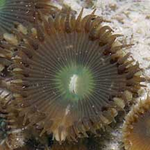 Oral disk has furrows. |
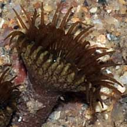 Long body column that is rough to the touch. Labrador, Jun 08 |
| The polyps are not embedded in a thick common tissue but are joined
to one another at the base by underground stems (called stolons).The
long body column raises the oral disk above the common tissue. Broad
zoanthids can multiply by budding. They are found in small clumps
of a few to many individuals. Body column usually beige or brown,
oral disk usually brown, sometimes shades of green or bright blue. Some species of broad zoanthids have been recorded to contain the highly toxic palytoxin. Compared to button zoanthids (Zoanthus sp.), broad zoanthids are generally found in smaller clusters with fewer individuals, although large mounds of them are sometimes seen. Sometimes confused with sponges, ascidians and other blob-like animals. Here's more on how to tell apart blob-like animals. What does it eat? Some species are said to capture and eat large prey, rapidly enclosing and swallowing them the way sea anemones do. But this has not been observed in our zoanthids. |
 At low tide with their tentacles retracted they look like a clump of sausages. Chek Jawa, Aug 05 |
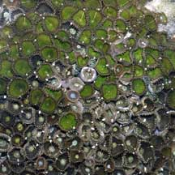 Sisters Island, Jul 06 |
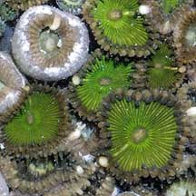 |
|
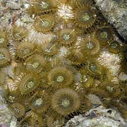 Kusu Island, Mar 05 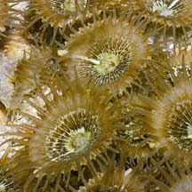 |
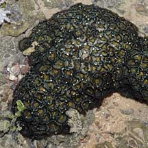 Tuas, Aug 09 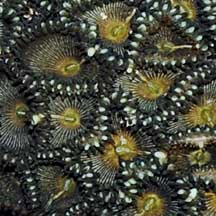 |
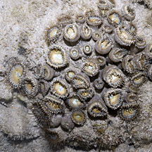 Pulau Semakau, Aug 11 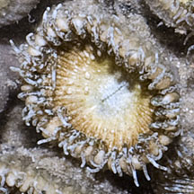 |
*Species are difficult to positively identify without close examination.
On this website, they are grouped by external features for convenience of display.
| Broad zoanthids on Singapore shores |
On wildsingapore
flickr
|
| Other sightings on Singapore shores |
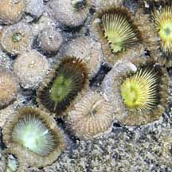 Pulau Pawai, Dec 09 |
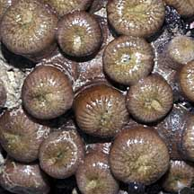 Pulau Sudong, Dec 09 |
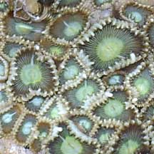 Pulau Salu, Jun 10 |
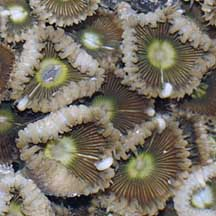 Pulau Salu, Jun 10 |
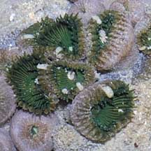 Pulau Salu, Aug 10 |
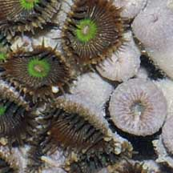 Pulau Salu, Aug 10 |
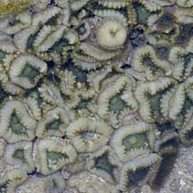 Terumbu Berkas, Jan 10 |
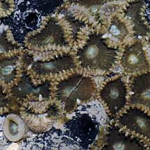 Pulau Berkas, May 10 |
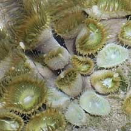 Pulau Senang, Jun 10 |
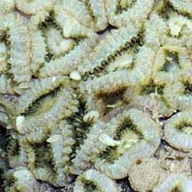 Pulau Biola, Dec 09 |
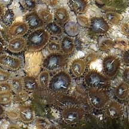 Pulau Biola, Dec 09 |
| Acknowlegement With grateful thanks to Dr James Reimer of JAMSTEC (Japan Agency for Marine-Earth Science and Technology) for identification of the zoanthids. References
|